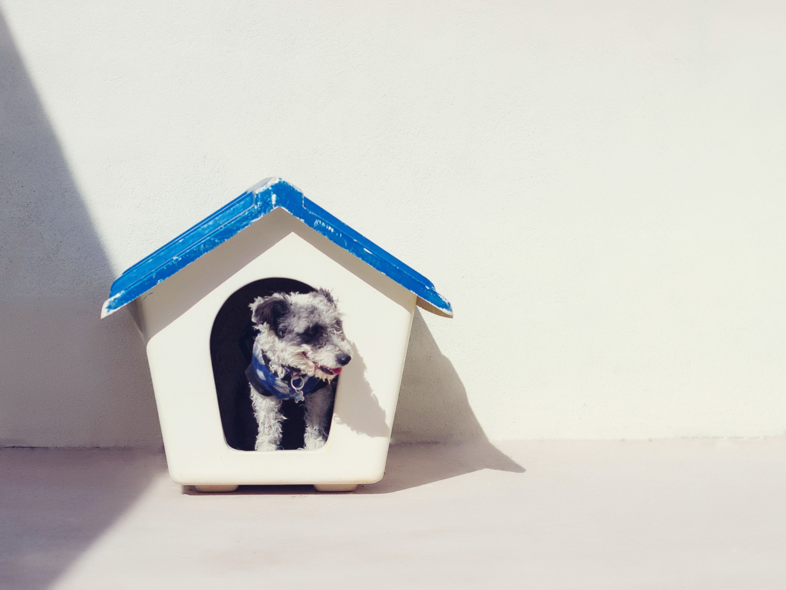
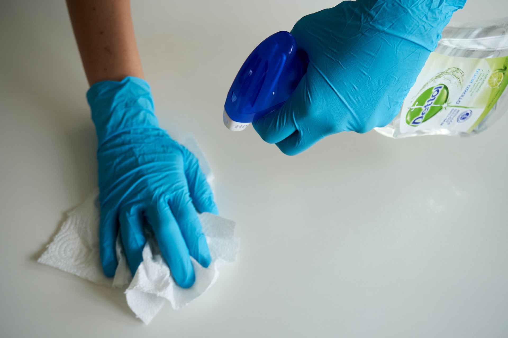

Consideraciones que debes tomar en cuenta para adoptar a un perrito o gatito
Escrito por: Luciana Proaño
Fecha: 2/1/2024
Cuidar de una mascota es una responsabilidad muy grande. Cuando se planea conseguir una, se deben tener preparadas muchas cosas para proveerle con un ambiente seguro y saludable para su desarrollo. En este artículo, te expondremos todas las consideraciones que debes tomar en cuenta antes de adoptar a un perrito o gatito.

Un perro o un gato necesitan de espacio para sus objetos y para movilizarse libremente. Hay ciertas razas de perros y de gatos que no se acostumbran a lugares pequeños, y requieren de una casa que les proporcione un espacio al aire libre. Si tienes poco espacio, asegúrate de conseguir una mascota que se adecúe a este.
Foto de Mysaell Armendariz en Unsplash
Cualquier tipo de mascota necesita de tiempo y atención por parte de su dueño, ya sea para jugar, pasear o simplemente para recibir cariño. Un dueño ausente puede que le provoque tristeza y estrés a su mascota, y ésta puede ser más propensa a causar destrozos a causa de esto.
Los objetos de tu compañero, como su plato de comida o sus juguetes, inevitablemente se van a ensuciar. Como dueño, debes estar dispuesto a limpiarlos regularmente para proteger a tu mascota de posibles enfermedades. Además, debes estar preparado para arreglar cualquier desastre que tu amigo consciente o inconscientemente haya realizado.
Foto de Anton en Unsplash
Como un niño, una mascota requiere de cierta cantidad de dinero para que puedas satisfacer sus necesidades. Este presupuesto debe tomar en cuenta las visitas médicas, el alimento, los juguetes, los productos de aseo, etc. Además, se debe tener un presupuesto para emergencias médicas. Un perro o gato puede adquirir una enfermedad inesperada y tú, como dueño, debes tener los recursos para llevarle inmediatamente al veterinario.
No todos los días van a estar llenos de aventuras y momentos felices. Van a existir ocasiones en las cuales tu amigo se pueda sentir abrumado y no se comporte de la manera adecuada. Debes estar preparado para guiar a tu mascota de manera respetuosa y con mucho amor. Para ser un dueño no basta con solo aprenderse un manual, sino que debes estar dispuesto a investigar constantemente y ser un gran observador para mejorar el lazo entre tú y tu mascota a lo largo del tiempo. Siguiendo todo esto, verás crecer una de las relaciones más amorosas y leales de tu vida.
Hogarmanía. (9 de noviembre del 2021). La responsabilidad de tener una mascota. Recuperado el 2/1/2023 de: https://www.hogarmania.com/mascotas/perros/consejos/responsabilidad-tener-mascota-13794.html
Agradecimiento a las Doctoras Alegría Albán, Victoria Guapas, Carolina Joba de la clínica Care for Pets por su aporte para la creación de este blog.
created with
Website Builder Software .